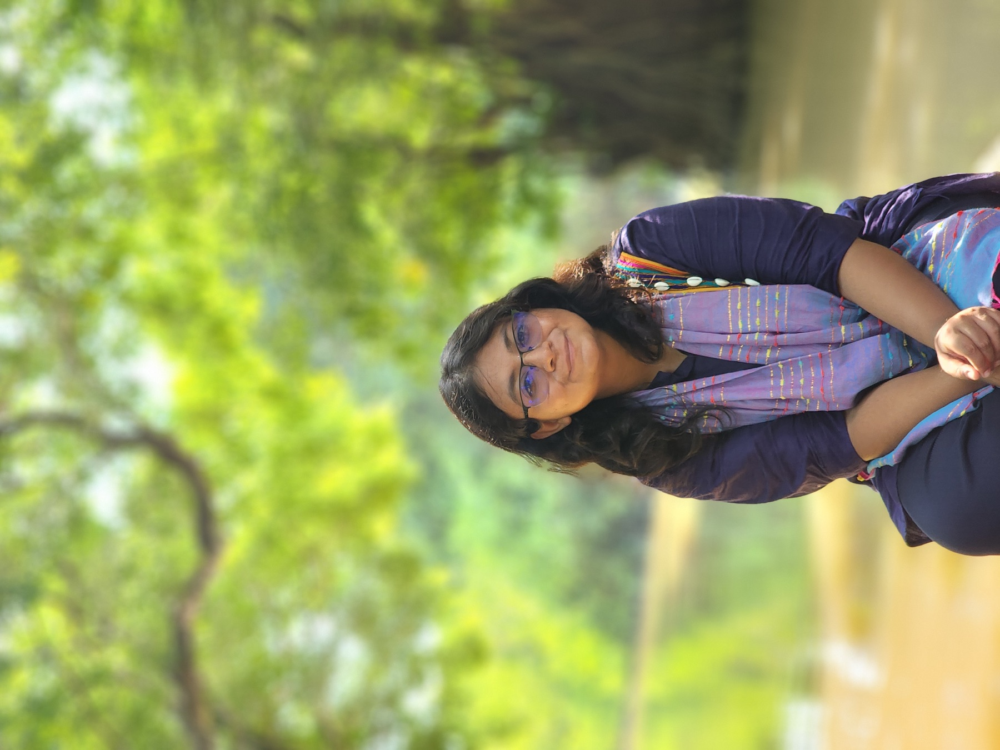

Bankline dynamics of Bangladesh’s major rivers
Quantifying long- and short-term erosion and accretion using Landsat imagery, NDVI, spatial datasets, and the Digital Shoreline Analysis System.
Civil engineering researcher
I’m Rawja Alam, a water resources researcher using hydrologic modeling and geospatial analysis to study floods, salinity, river dynamics, and climate-resilient water systems.

My work sits at the meeting point of hydrology, geospatial analysis, and infrastructure planning—turning complex environmental data into evidence that can support more resilient decisions.
I earned my BSc in Civil Engineering from the Military Institute of Science and Technology, majoring in Water Resources Engineering with a minor in Structural Engineering. I am currently a Research Assistant at Bangladesh University of Engineering and Technology (BUET), working on a web-based agricultural information system for Bangladesh.
Selected completed and ongoing research across river systems, transportation, and infrastructure.
Quantifying long- and short-term erosion and accretion using Landsat imagery, NDVI, spatial datasets, and the Digital Shoreline Analysis System.
A grid-based water and salt balance model for Polder 30, integrating hydro-climatic, land-use, crop, routing, and salinity data.
Investigating ownership and travel behavior in Dhaka, and their implications for public transportation performance and planning.
Developing an interactive database from international datasets and satellite imagery to visualize dam distribution and attributes.
A scientometric and critical review of design structures, performance limits, and resilience under hydrological and seismic stress.
Journal article
Saki Rezwana, Rawja Alam, Devin Rhoads, Nicholas Lownes
Journal article
Quazi Afra Nawar, Rawja Alam, Jumana Akhter, G. M. Jahid Hasan
Conference paper · Accepted
Naimul Hasan, Nusaiba Nueri Nasir, Mairukh Wardi, Rawja Alam, et al.
Conference paper · Accepted
Md Tarique Hasan Khan, Saki Rezwana, Rawja Alam
Research experience
Bangladesh University of Engineering and Technology (BUET)
Developing a DDIEM-inspired water and salt balance model for the Web-based Agricultural Information System for Bangladesh project.
Industry experience
Health Engineering Department, Ministry of Health and Family Welfare
Observed site construction, sheet piling, structural design, safety, cost estimation, and BOQ preparation in a healthcare project context.
Education
Military Institute of Science and Technology (MIST)
Major in Water Resources Engineering and minor in Structural Engineering. Recipient of the university merit scholarship.
Technical toolkit
ArcGIS Pro · ArcGIS Desktop · QGIS · HEC-RAS
Python · MATLAB · C/C++
AutoCAD · SAP2000 · ETABS · Adobe Illustrator · Unreal Engine
Get in touch
I’m open to research collaborations and opportunities in water resources, geospatial analysis, and resilient infrastructure.
rawja.alam@gmail.com ↗